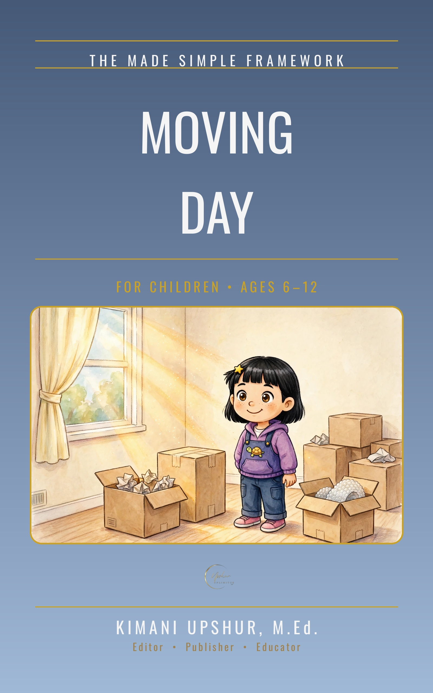

Home / Kids & Teens / Children

Moving Day
God Goes With You
by Kimani Upshur, M.Ed.
Moving Day follows nine-year-old Lily, whose family moves to a new city three hours away, in ten chapters from The Big News, Goodbye, Old Room, and The Verse for the Journey through Packing Day and The Long Drive to Hello, New Room, First Night Jitters, He Goes Before You, New Friends, and Home Is Where God Is. A Note to Grown-Ups names the book's theological anchor, Deuteronomy 31:8 — God goes before you, He will not leave you, and so do not fear — and the Scripture Note for Families says the book weaves that one verse through the story, quoted word-for-word from the ESV where labeled; each chapter carries a Treasure Verse from Deuteronomy 31:8 and ends with both a Do and a Pray, and the back matter carries A Special Invitation: Give Your Life to Jesus, with The Sinner's Prayer. Written from a Christian worldview — Scripture first.
- Publisher
- Upshur Unlimited, LLC
- Author
- Kimani Upshur, M.Ed.
- Format
- Ebook
- List Price
- $4.99 USD
- Language
- English
- Audience
- For Children • Ages 6–12
More Children Books
Explore the full collection of books for children.